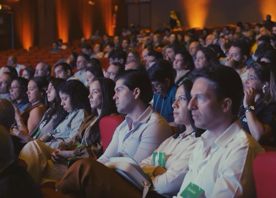
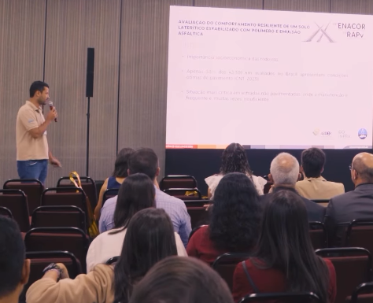
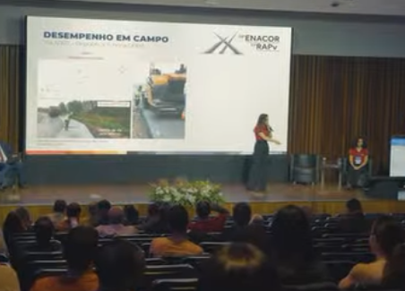
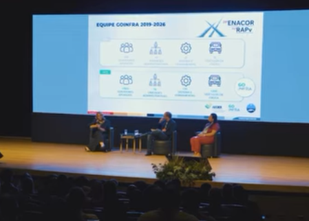

Mais do que um encontro de profissionais, o ENACOR 2026 transformou Goiânia em um grande centro de discussões sobre o presente e o futuro da infraestrutura de transportes no Brasil. Ao longo da programação técnica, o evento promoveu 28 palestras com temas atuais e estratégicos, seis minicursos especializados e a apresentação de 140 trabalhos científicos, reunindo pesquisadores, gestores públicos, empresas e especialistas de diferentes regiões do país.
A programação evidenciou a evolução tecnológica que vem redesenhando o setor, com debates voltados ao gerenciamento de pavimentos, inteligência artificial, segurança viária, sustentabilidade e novas metodologias de planejamento e conservação de rodovias.

Entre os temas que mais despertaram interesse esteve a palestra da Huesker, sobre a utilização de geossintéticos na infraestrutura de transportes. As soluções apresentadas demonstraram como esses materiais têm contribuído para aumentar a estabilidade de solos, reforçar estruturas de pavimentos e ampliar a durabilidade das obras, tornando os projetos mais eficientes e sustentáveis.

Outro destaque foi a apresentação do DNIT sobre a tecnologia iPAVe, que mostrou os avanços alcançados no monitoramento de mais de 50 mil quilômetros de rodovias brasileiras. A ferramenta representa um importante passo para a modernização da gestão rodoviária, permitindo avaliações mais precisas da condição dos pavimentos e fornecendo subsídios técnicos para o planejamento de investimentos e de ações de conservação.

A área de segurança viária também ganhou protagonismo durante o encontro. A palestra da Lisy, voltada aos dispositivos de contenção e às novas soluções de proteção aos usuários das rodovias, reforçou a importância de investir em tecnologias capazes de reduzir acidentes e aumentar a segurança de motoristas e passageiros.
A inovação aplicada à manutenção das rodovias esteve presente nas discussões conduzidas pela Dynatest, que apresentou soluções baseadas em inteligência artificial e em sistemas de gerenciamento de pavimentos. O uso de ferramentas inteligentes para coleta e análise de dados vem permitindo decisões mais assertivas, otimização de recursos e melhor planejamento das intervenções na malha rodoviária.

Outro tema de grande relevância foi o debate sobre faixas de domínio e travessias urbanas, apresentado em painel técnico com participação do Banco Mundial. A discussão evidenciou os desafios enfrentados pelos gestores públicos diante do crescimento urbano e da necessidade de compatibilizar desenvolvimento, mobilidade e segurança nas áreas lindeiras às rodovias.
Os seis minicursos especializados complementaram a programação técnica, promovendo uma imersão em temas como aerolevantamentos, logística, inteligência artificial, gestão de pavimentos e novas metodologias de conservação rodoviária. Já os mais de 140 trabalhos científicos apresentados demonstraram a força da pesquisa brasileira e o compromisso da comunidade técnica com a produção de conhecimento e o desenvolvimento de soluções inovadoras para a infraestrutura de transportes.
Para a RDS, acompanhar a programação técnica do ENACOR é estar conectada às transformações que moldam o futuro da engenharia. Os temas debatidos durante o encontro reforçam que o avanço da infraestrutura brasileira depende cada vez mais da integração entre conhecimento, tecnologia e inovação, pilares fundamentais para a construção de rodovias mais seguras, eficientes e preparadas para os desafios das próximas décadas.